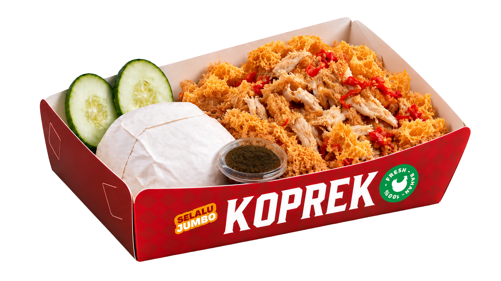
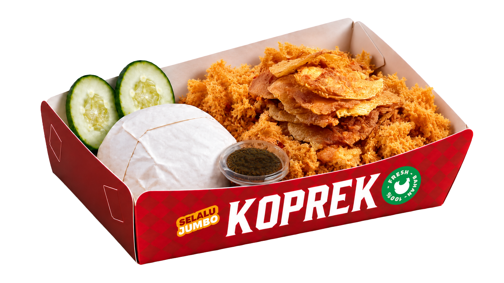
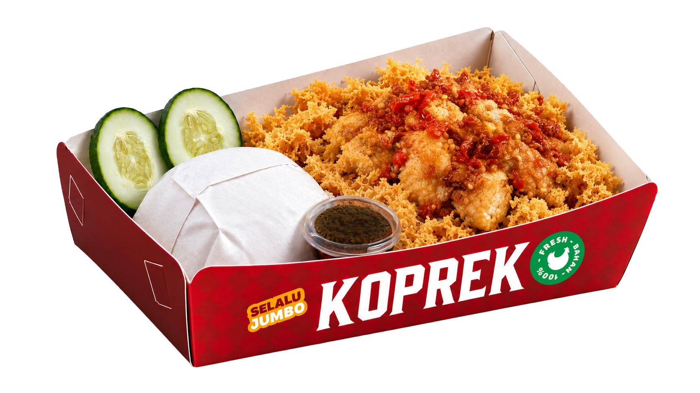
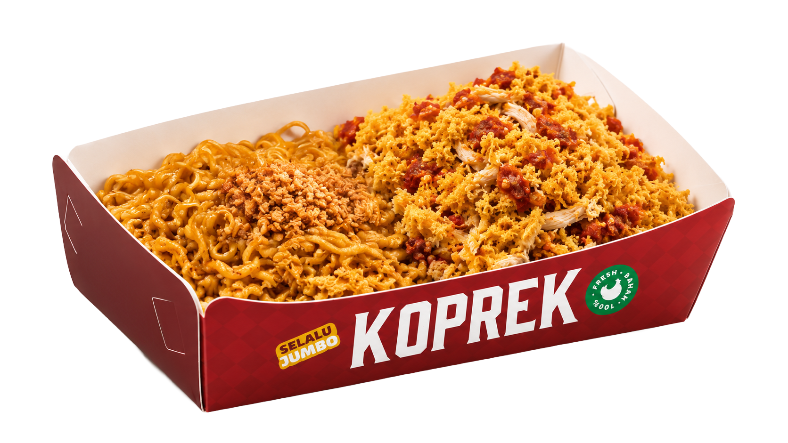

Favorit semuaNasi Kremes Ayam GeprekAyam crispy, bumbu rempah, kremes renyah, dan sambal bawang.
Teman makan andalanNasi Kremes TelurTelur, nasi hangat, kremes renyah, dan sambal bawang.
Rasa yang berbedaNasi Kremes Tahu BaksoTahu bakso, bumbu rempah, kremes renyah, dan sambal bawang.
Porsi puas, rasa mantapIndomie Kremes Ayam GeprekIndomie, ayam crispy, kremes renyah, dan sambal bawang.